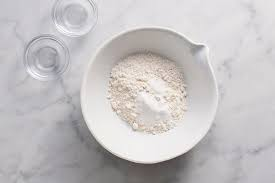
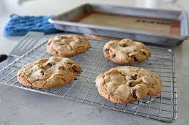

Santi's Cookie Recipe
I got this recipe from my mom, who found it years ago while browsing the internet. She said she tried it once and decided it was the only chocolate chip cookie recipe she'd ever need. When she passed it on to me, I could almost hear her voice guiding me through each step—sifting the flour, creaming the butter and sugar, and folding in the chocolate pieces just right. It feels comforting knowing that even though it came from a random website, it’s now part of our family’s baking tradition.
-

Step 1
Sift flours, baking soda, baking powder and salt into a bowl. Set aside.
-

Step 2
Using a mixer fitted with paddle attachment, cream butter and sugars together until very light, about 5 minutes. Add eggs, one at a time, mixing well after each addition. Stir in the vanilla. Reduce speed to low, add dry ingredients and mix until just combined, 5 to 10 seconds. Drop chocolate pieces in and incorporate them without breaking them. Press plastic wrap against dough and refrigerate for 24 to 36 hours. Dough may be used in batches, and can be refrigerated for up to 72 hours.
-

Step 3
When ready to bake, preheat oven to 350 degrees. Line a baking sheet with parchment paper or a nonstick baking mat. Set aside.
-

Step 4
Scoop 6 3½-ounce mounds of dough (the size of generous golf balls) onto baking sheet, making sure to turn horizontally any chocolate pieces that are poking up; it will make for a more attractive cookie. Sprinkle lightly with salt and bake until golden brown but still soft, 18 to 20 minutes. Transfer sheet to a wire rack for 10 minutes, then slip cookies onto another rack to cool a bit more. Repeat with remaining dough, or reserve dough, refrigerated, for baking remaining batches the next day. Eat warm, with a big napkin.